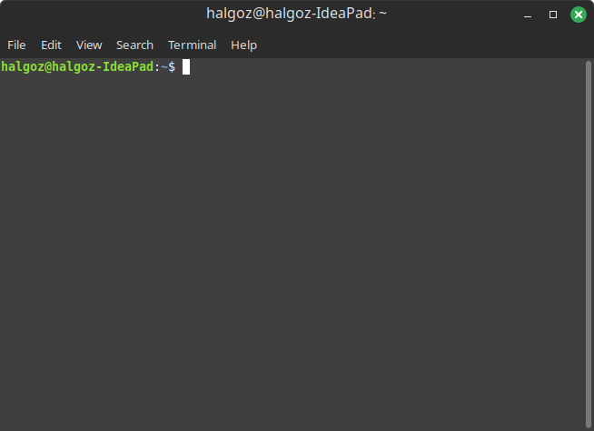

7 نافذة الأوامر

تستعمل مكتبة argparse المبنية لتفسير التعليمات الداخلة على البرنامج من سطر الأوامر.
وبهذا تشابه الأدوات الموجودة على نظام التشغيل، مثل أداة النسخ cp وأداة النقل mv وغيرهما:
فلو كتبنا برنامج حاسبة فيه ثلاث عمليات ثنائية بين عددين، فيمكن استعماله عن طريق نافذة الأوامر هكذا:
7.1 المفسِّر
نبدأ بمثال بسيط لاستعراض المكونات الرئيسية:
import argparse
# إنشاء المفسِّر
parser = argparse.ArgumentParser()
# تحديد العوامل
parser.add_argument('echo', help='the string you want to echo back')
# تفسير سطر المدخلات
args = parser.parse_args()
# الإخراج
print(args.echo)في القطعة السابقة:
- استعمال الفعل المُنشِئ
argparse.ArgumentParser()لإنشاء المفسِّر - استعمال الفعل
add_argument()لإضافة عامل- يعتبر
'echo'عاملًا موضعيًّا - أما
helpفهي لتوثيق الغرض من العامل
- يعتبر
- فإذا انتهينا من جميع العوامل، نستعمل الفعل
parse_args()لتفسير السطر- يتم تخزين القيم المستلمة في المتغير
args- مثلاً:
args.echo
- مثلاً:
- يتم تخزين القيم المستلمة في المتغير
الآن إذا كتبنا في نافذ الأوامر التالي:
فستظهر النتيجة التالية:
helloويمكن اختبار ذلك في بايثون دون الحاجة لتمرير ذلك عبر نافذة الأوامر، كالتالي:
hello7.2 العامل الاختياري
الخيار (Option) هو العامل الذي يتم تعيينه بالاسم في سطر الأوامر، باستعمال الشرطة - أو الشرطتين --.
ويُسمَّى عَلَمًا (Flag) في حال كونه وجوديًّا؛ أي أنه يكون True إذا تم ذكره وFalse إذا لم يُذكر.
يتم تعيين العوامل بالاسم بإلصاق الشرطة والشرطتين قبله، مثل: -u أو --upper في البرنامج التالي:
import argparse
# إنشاء المفسِّر
parser = argparse.ArgumentParser()
# تحديد العوامل
parser.add_argument('echo',
help='the string you want to echo back')
parser.add_argument('-u', '--upper', action='store_true',
help='convert the string to uppercase')
# تفسير سطر المدخلات
args = parser.parse_args()
# المعالجة
if args.upper:
result = args.echo.upper()
else:
result = args.echo
# الإخراج
print(result)- لاحظ أننا سمينا عاملين: بالحرف الواحد اختصارًا
-uوبالكلمة--upper - وجود الشرطة والشرطتين يعني عدم وجوبهما
- أما
action='store_true'فيجعل وجود العامل يعطي القيمةTrueلمتغيره، وقيمةFalseإذا لم يُذكر
وفي نافذة الأوامر كل الآتي مقبول:
| الأمر | الوصف |
|---|---|
python echo.py hello |
بالإهمال |
python echo.py hello -u |
مع ذكره أخيرًا مختصرًا |
python echo.py hello --upper |
مع ذكره أخيرًا بالكلمة |
python echo.py -u hello |
مع ذكره أولًا مختصرًا |
python echo.py --upper hello |
مع ذكره أولًا بالكلمة |
7.3 اختصار الخيارات
يمكن اختصار الخيارات بالأعلام المختصرة، مثل -u بدلاً من --upper، أو -r بدلاً من --reverse، أو -c بدلاً من --count. وفوق ذلك يمكن اختصارها بحروفها مشبوكة مثل: ur بدلاً من -u -r.
في المثال التالي سنضيف خياريْن:
- عَلَم (خيار وجودي):
--reverseوجوده يعني أننا نريد عكس النص - خيار معيَّن:
--countيأخذ قيمة عددية لمرات تكرار النص- ونوعه
type=int(عدد صحيح) - وقيمته الأصلية
default=1(عند عدم ذكره)
- ونوعه
import argparse
# إنشاء المفسِّر
parser = argparse.ArgumentParser()
# تحديد العوامل
parser.add_argument('echo',
help='the string you want to echo back')
parser.add_argument('-u', '--upper', action='store_true',
help='convert the string to uppercase')
parser.add_argument('-r', '--reverse', action='store_true',
help='reverse the string')
parser.add_argument('-c', '--count', type=int, default=1,
help='number of times to repeat the string')
# تفسير سطر المدخلات
args = parser.parse_args()
# المعالجة
result = args.echo
if args.upper:
result = result.upper()
if args.reverse:
result = result[::-1]
if args.count > 1:
result = (result + ' ') * args.count
# الإخراج
print(result)فاستعمالها قد يأتي هكذا:
python echo.py good --reverse --upper
python echo.py good -r -c 3 -u
python echo.py good -ur --count 3
python echo.py good -urc 3- يمكن خلط الصيغ الطويلة والمختصرة في نفس الأمر
- في السطر الأخير: يجب تأخير العامل المختصر بعد الأعلام المختصرة، حيث يكون
cبعدrوuفي الصيغة المختصرة؛ وذلك لأنه ليس عامل وجود وإنما يأخذ قيمة.
7.4 الإلزام
يمكن جعل الخيار إلزاميًا بإضافة required=True عند تعريفه. مثلًا:
import argparse
# إنشاء المفسِّر
parser = argparse.ArgumentParser()
# تحديد العوامل
parser.add_argument('-i', '--input', required=True,
help='path to input file')
parser.add_argument('-o', '--output', required=True,
help='path to output file')
# تفسير سطر المدخلات
args = parser.parse_args()
# الإخراج
print(f'Input file: {args.input}')
print(f'Output file: {args.output}')فبهذه الطريقة يلزم التعيين لكلا الخيارين، بأي هذه الطرق:
7.5 الوصف والاستعمال والأمثلة
لتسهيل التعامل مع البرامج، فإننا نكتب وصفًا لها، ونكتب طريقة استعمالها، ونورِد أمثلة، كالتالي:
import argparse
# إنشاء المفسِّر
parser = argparse.ArgumentParser(
description='A simple calculator', # وصف البرنامج
usage='python calc.py <operation> <a> <b>', # طريقة استعمال البرنامج
epilog='Example: python calc.py add 5 10', # مثال على استعمال البرنامج (يظهر في الأسفل)
)
# تحديد العوامل
parser.add_argument('operation', choices=['add', 'mul'],
help='the operation to perform')
parser.add_argument('a', type=float,
help='the first number')
parser.add_argument('b', type=float,
help='the second number')
parser.add_argument('-v', '--verbose', action='store_true',
help='increase output verbosity')حددنا هذه المرَّة ثلاثة عوامل للمفسِّر نفسه:
descriptionهي وصف البرنامجusageهي طريقة استعمال البرنامجepilogهو مثال على استعمال البرنامج (يظهر في الأسفل)
وكذلك أضفنا العوامل التي نتوقع إدخالها من المستخدم، ويتم تعيينها بالموضع (Positional Arguments):
operationوهي إماaddأوmulكما هو موضح فيchoicesaوهي عدد عشريfloatbوهي عدد عشريfloat-vوهو عَلَم، لوجودaction='store_true'- الغرض منه: ذكر مزيدٍ من التفاصيل
يظهر ذلك إذا طلبت منشور المساعدة بإحدى طريقتين:
- بالحرف الواحد:
-h - بالكلمة:
--help
فيظهر نص المساعدة بجميع التفاصيل التي حددناها:
usage: python calc.py <operation> <a> <b>
A simple calculator
positional arguments:
{add,mul} the operation to perform
a the first number
b the second number
options:
-h, --help show this help message and exit
-v, --verbose increase output verbosity
Example: python calc.py add 5 10ثم نكتب تفاصيل البرنامج، بعد أن نقرأ السطر ونفسره:
# تفسير سطر المدخلات
args = parser.parse_args()
# المعالجة
if args.operation == 'add':
result = args.a + args.b
elif args.operation == 'mul':
result = args.a * args.b
# الإخراج
# verbose تعني ذكر مزيدٍ من التفاصيل
if args.verbose:
print(f'The result of {args.operation} is {result}')
else:
print(result)7.6 تعدد القيَم للمعامل الواحد
لجعل القيم تتعدد للعامل الواحد، نستعمل nargs على النحو التالي:
nargs |
معناه |
|---|---|
| لا شيء (الأصل) | يقرأ قيمة واحدة. |
nargs=N (عدد صحيح) |
يقرأ N عددًا من القيم من سطر الأوامر ويخزنها في قائمة. |
nargs='?' |
يقرأ قيمةً واحدة إنْ وُجِدت، وإلا يستخدم قيمة default فإن كان محددا بالاسم (بالشرطة - أو الشرطتين --) وذُكِرَ بلا قيمة تتبعه؛ فتُستَخدم قيمة const. |
nargs='*' |
يتوقع صفرًا أو أكثر من القيم ليقرأها ويخزنها في قائمة. |
nargs='+' |
يتوقع واحدًا أو أكثر من القيم ليقرأها ويخزنها في قائمة. |
مثال nargs=2
وفي المثال التالي نستعرض استعمال nargs=2 لتعيين القيم الأولى والثانية للعاملين -a و-b بالترتيب، بالتمثيل على حساب المسافة بين نقطتين:
import argparse
from my_math import euclidean_distance, manhattan_distance
# إنشاء المفسِّر
parser = argparse.ArgumentParser(
description='Euclidean distance between two points (defaults to origin)',
usage='python math.py <metric> -a <x> <y> -b <x2> <y2>',
epilog='Example: python math.py euclidean -a 3 4 -b 1 2',
)
# تحديد العوامل
parser.add_argument('metric', choices=['euclidean', 'manhattan'],
help='the metric to use')
parser.add_argument('-a', '--first', nargs=2, type=float, default=[0.0, 0.0],
help='the coordinates of the first point')
parser.add_argument('-b', '--second', nargs=2, type=float, default=[0.0, 0.0],
help='the coordinates of the second point')
# تفسير سطر المدخلات
args = parser.parse_args()
# المعالجة
if args.metric == 'euclidean':
result = euclidean_distance(
x1=args.first[0],
y1=args.first[1],
x2=args.second[0],
y2=args.second[1],
)
elif args.metric == 'manhattan':
result = manhattan_distance(
x1=args.first[0],
y1=args.first[1],
x2=args.second[0],
y2=args.second[1],
)
# الإخراج
print(result)مثال nargs='+'
وهذا مثال يوضح تمرير قيمة عامل آخر بعد الأول الذي يقبل تعدد القيم، ووظيفته نسخ مجموعة ملف أو أكثر (nargs='+') إلى مجلد معين:
import argparse
# إنشاء المفسِّر
parser = argparse.ArgumentParser(
description='Copy files to a destination directory',
usage='python copy.py <files> <destination>',
epilog='Example: python copy.py file1.txt file2.txt /home/user/destination',
)
# تحديد العوامل
parser.add_argument("files", nargs="+",
help="أسماء الملفات لنسخها")
parser.add_argument("destination",
help="المجلد الهدف")
# تفسير سطر المدخلات
args = parser.parse_args()
# المعالجة (لن ننسخ الملفات حقيقةً، وإنما سنتظاهر بذلك)
for file in args.files:
# الإخراج
print(f'Copying {file} to {args.destination}')ويكون عمله بهذا الشكل:
فيخرج لنا:
Copying file1.txt to /home/user/destination
Copying file2.txt to /home/user/destinationراجع توثيق argparse لمعرفة المزيد.
7.7 المصلطحات
| المصطلح | الترجمة | معناه |
|---|---|---|
| Command-line Interface (CLI) | واجهة نافذة الأوامر | هي النافذة السوداء -غالبًا- وهي أبسط ما نصل به لتشغيل أي برمجية من غير الحاجة إلى واجهة رسومية (تطبيق بصري / مرئي) |
| Flag | عَلَم | وهو عامل وجوديْ يكون True إذا تم ذكره وإلا يكون False |
| Parser | مفسِّر | هو البرنامج الذي يقوم بتفسير سطر الأوامر وتحليله |
| Positional Argument | عامل موضعي | هو العامل الذي يتم تعيينه بالموضع في سطر الأوامر |
| Option | خيار | هو العامل الذي يتم تعيينه بالاسم في سطر الأوامر، باستعمال الشرطة - أو الشرطتين -- |